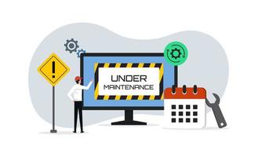

Soluções Tecnologia
Manutenção dos eletrônicos
É uma forma de garantir a longevidade do sistema e assegurar o bom funcionamento, a adaptabilidade, a qualidade e a durabilidade do sistema
Montagem/instalação dos eletrônicos

Uma das principais finalidades da montagem de equipamentos eletrônicos é a aplicação da tecnologia, que pode ser empregada em variados níveis
Formatação dos eletrônicos
A formatação vai ajudar na competência de seu desempenho durante os trabalhos. Dá uma nova “vida” para a máquina. Vai acabar com aqueles programas difíceis de desinstalar.